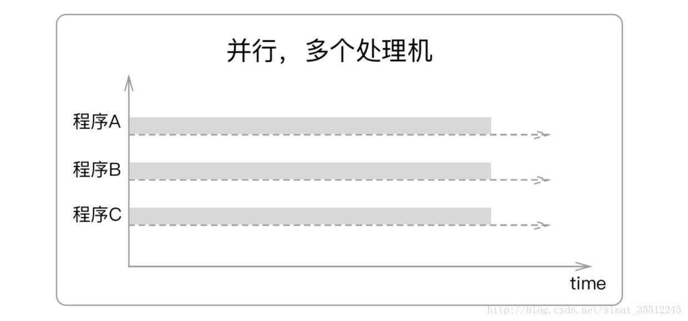
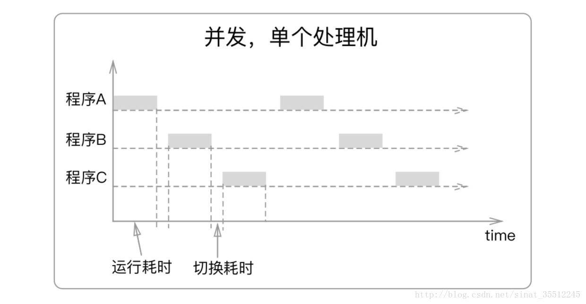

最近遇到如何并行写日志文件的问题，查看之前的代码，发现是利用RabbitMQ 作为消息中转，把并行的日志流通过HTTP 请求整合成串行的方式，然后通过一个单独的 Rabbit-Consumer 来写入文件，这样就成功避免了多个进程同时写一个文件造成的加锁问题，但是我觉得日志这种I/O为主的任务，动用RabbitMQ 有点大材小用的感觉，Producer-Consumer的总体思想可以不变，但是可以用其他更加轻量级的编程模型来实现，也借此重新优化一下日志输出的，毕竟之前的日志输出感觉一片混乱，在自己熟悉代码的情况下，仍然会有些理解困难，这跟当初自己写代码的时候不重视日志输出这一块有关，甚至很多情急之下写下的print打印信息都最后都没有处理。
在开始之前，必须要回忆一些似曾相识，却又容易混淆的基本概念，因为在不区分这些基本OS名词之前，根本就完全无法下手，不知道应该如何正确的实践，具体到每个代码跟这些概念是如何结合在一起的，基本上完全不知道，学生时代留下的坏习惯作怪，理论脱离实际，这时候也才意识到书到用时方恨少。
阻塞与非阻塞
这个概念有点复杂，来自OS中线程/进程的生命周期，诸如，就绪，运行，阻塞 ，但是如果仅仅按照这个方向理解，那就比较简单，仅仅就是线程/进程调度程序根据一定的策略，把线程/进程制定相应的状态，来安排和调度CPU资源；然而在OS之中，阻塞的原因很多，并非只是单纯的IO，严格上来讲应该是跟IO类似的原因被阻塞，即请求的资源无法得到，所以这里的阻塞调用，则是更加强调的是，单线程/进程在运行时，那些一定会被阻塞的编程模式，最重要的一个就是同步的编程模式，一旦请求的资源不具备，程序立刻陷入等待，这样就会特别容易被OS识别为闲置的线程/进程，并很快被阻塞。相反，异步则是一种将等待的资源交给外部程序和硬件，要么是子线程/进程，要么就是外部设备，总之试图通过改变通信模式的方式，使主程序始终维持运行态，这样就达到不被阻塞的目的。这就对编程模式有比较大的变动，因为主程序需要应对请求资源返回的各种情况需要预先有响应的程序段来处理，也就是常见的编程过程中回调函数的编写。
阻塞调用是指调用结果返回之前，调用者会进入阻塞状态等待。只有在得到结果之后才会返回。
非阻塞调用是指在不能立刻得到结果之前，该函数不会阻塞当前线程，而会立刻返回。
阻塞调用：比如 socket 的 recv()，调用这个函数的线程如果没有数据返回，它会一直阻塞着，也就是 recv() 后面的代码都不会执行了，程序就停在 recv() 这里等待，所以一般把 recv() 放在单独的线程里调用。
非阻塞调用：比如非阻塞socket 的 send()，调用这个函数，它只是把待发送的数据复制到TCP输出缓冲区中，就立刻返回了，线程并不会阻塞，数据有没有发出去 send() 是不知道的，不会等待它发出去才返回的。
并发与并行
基本还记得最显著的区别
并发是指一个时间段内，有几个程序都在同一个CPU上运行，但任意一个时刻点上只有一个程序在处理机上运行。
并行是指一个时间段内，有几个程序都在几个CPU上运行，任意一个时刻点上，有多个程序在同时运行，并且多道程序之间互不干扰。 两者区别如下图


同步与异步
这个有点基本印象，经过很多次反复理解，依然还是没有很清晰掌握
同步：在发出一个同步调用时，在没有得到结果之前，该调用就不返回
异步：在发出一个异步调用后，调用者不会立刻得到结果，该调用就返回了
同步和阻塞， 异步和非阻塞概念非常类似，但是所涉及的范围还是有所不同，总的来讲应该是2个独立的概念体系。
同步和异步，应该是编程模型中，约定好的一种线程/进程间互相通信的方式，同步则是比较自然的一种程序运作方式，就是自顶向下，资源缺失，主程序等待资源准备，资源就绪继续运行；然而在OS系统调度的指挥下，同步很明显的缺点就是主程序无差别的等待所有资源，很容易程序会因为一些无关紧要的情况而一直处于等待，这其中就有比较大的优化空间；所以根据这种情况一种自然的解决办法是，让程序对各种资源缺失的情况能有对应的方案，最终形成了异步的通信策略，相比于定义上的，调用之后立刻返回这样不知所云的解释，我的理解是，程序是制定了一系列某些资源缺失或者不可用时，程序应该如何运作的逻辑，并且为了保持主程序运行，把程序调用之后的所有职责都交给了子程序，即子程序调用之后，应该由子程序来负责通知主程序，而不是跟同步那样，主程序持续等待子程序准备就绪，而原地踏步；这里的主要区别就是异步时候，主程序调用之后立刻转入下一步不需要这个资源的逻辑，有点类似于，乐观锁和悲观锁的性质，不加判断的断定后续逻辑分支，直接运行。缺点是，感觉异步编程为了解决临界区问题和通信问题，有很多复杂的管控逻辑需要解决，简单来说就是很多坑。好处是，如果这些坑都能解决，程序运行效率会有比较大的提升。
如果同步异步是编程模式的话，那么阻塞和非阻塞相对来说我认为是一个并非严格的概念，如果调用必定会导致主程序闲置，进而被置入阻塞状态，那么就是阻塞，如果调用不会导致主程序闲置，那么就是非阻塞。这其中的关键点就是OS的进程/线程调度，而不是调用的问题，然而阻塞的定义中常常会加入调用是否立刻返回的解释，常常让我跟同步异步的概念分不清楚，诚然调用不返回在当今的OS下一定会引起主程序闲置并阻塞，但是主因必然是主程序闲置等待，如果异步通信，但是仍然没有后续程序逻辑，显然异步程序也会有阻塞的风险。所以，我觉得阻塞这个更应该是一个OS的结果，而不是原因。
阻塞和非阻塞关注的是程序等待调用结果时的状态，是闲置还是持续运行
线程与进程
曾经考试的时候定义背的滚瓜烂熟，然而却完全没有代码经验，感觉彼时都到门口了，缺乏临门一脚，直到现在又千辛万苦来回到这里，重新完成当初没有做到的事情。
这里我在实践中，线程跟并发 搞混了，以至于以为线程之间必然是并发，所以有可能分时共享cuda 的引用，认为利用多线程就可以优化GPU利用率。最后实践中，怎么都达不到预想的目的。仔细想想，尽管同一个进程的资源可以被进程内的所有线程共享，这样如果多个线程是分时共享的，那么cuda引用作为一个共享资源，就可以达到并发使用的目的；但是这个前提是，线程必须是并发的，那么线程真的是并发的吗？如果是曾经的单核单线程CPU，答案是肯定的，现在的基本都是多核多线程CPU了，所以线程级别肯定是并行的，那么cuda引用则必然作为一个临界共享资源，被多个线程抢占使用，多线程并行退化成多线程并发，虽然预想的目的似乎达到了，但是貌似并没有达到优化的目的，至少跟之前编写的单线程基本性能是一样的。
其次是Python的GIL锁, Global Interpreter Lock，即任何Python 线程执行，只有GIL锁的线程才可以运行，也就是说一个进程下的多线程在Python下，永远只有一个线程在运行
import threading, multiprocessing
def loop():
x = 0
while True:
x = x^1
for i in range(multiprocessing.cpu_count()):
t = threading.Thread(target = loop)
t.start()上述程序在多核CPU下占有率只有100%，但是C++/Java改写的死循环，则可以每个核心都跑完，即4核心400%
更坑的是，GIL锁每个线程只有执行100条字节码的机会，那么有效的利用cuda资源则成为空谈，因为频繁的显存数据进出，比较浪费时间。所以python下一般都是利用多个进程来实现并行，因为多个进程有独立的GIL锁，互不影响。
惭愧的是，自己写了这么久的Python，居然才第一次面对并行化问题，才知道GIL锁有这么多繁琐的坑。理论上证实这样的不可行之后，有点失望，但是也还是保留机会来完成并行写日志这个小任务的，毕竟通过HTTP接口，再怎么并发，框架还是很好的完成的这些繁琐的坑，只需要在producer-consumer 框架下，实现并行接受，串行消费就可以了，这还是比较基础的一个改写，对自己还是有信心的。
线程安全，进程安全，意思就是在多线程或者多进程下，可以在代码中不加改变的直接使用，库和框架会自动解决并发和并行问题。其中 queue.Queue 就是线程安全的，下面就是利用Queue来实现进程间通信的producer-consumer
from queue import Queue
from threading import Thread
def producer(out_q):
while True:
out_q.put(data)
def consumer(in_q):
while True:
data = in_q.get()
...
# 通过q通知 任务完成
in_q.task_done()
q = Queue()
t1 = Thread(target=consumer, args=(q,))
t2 = Thread(taget=producer, args=(q,))
t1.start()
t2.start()
# wait for all produced items to be consumed
q.join()优化点，队列的流量控制，q需要指定大小，必要时候阻塞Queue，以避免连锁效应导致程序运行失常，同时阻塞的队列也会形成死锁，通过非阻塞和设定超时时间，来处理队列满或者超时的情况，避免阻塞
q = Queue(100)
try:
data = q.get(block=False)
except queue.Empty:
pass
try:
q.put(item, timeout=5.0)
except queue.Full:
log.warning('queued item %r discarded!', item)最终方案
利用tornado接受并发的http请求，解析request_body之后，直接入列队伍q.put()，这里利用了tornado 的异步接受并发的特点，直接简化producer过程。接着只需要编写consumer，取出数据，写到文件即可
from eliot import log_call, start_action, to_file
class LogHandler(tornado.web.RequestHandler):
# eliot 直接利用装饰器来添加日志功能，只记录input, output
@log_call
def post(self, *args, **kwargs):
try:
self.timestamp = time.ctime()
self.recv_json = json.loads(self.request.body, strict=False)
q.put((self.timestamp, self.recv_json ))
output_dic = {
'status': '1',
'result': 'success'
}
except Exception as e:
print('LogHandler Error: ', e)
return
# eliot.start_action 通过 with 来记录函数段，有点繁琐，但是对于某段代码的日志记录很方便
def consume_msg(queue):
while True:
with start_action(action_type='consume_msg', lenghth = queue.qsize()):
try:
timestamp, msg= q.get()
start_time = time.time()
with start_action(action_type='save_request_body', timestamp=timestamp,msg=msg):
save_body(msg)
except Exception as e:
with start_action(action_type='consume_msg exceptiosn', timestamp=timestamp,e=e, msg=msg):
print('consume_mgs exception : ' , e)
consumer = Process(target=consume_msg, args=(q, ))
consumer.daemon = True # 守护进程
consumer.start()至此，多进程的日志记录完成，同时也用上了之前一直想要用eliot日志系统，让日志看起来清爽了许多。
RabbiMQ
RabbiMQ 的方案也写进来，毕竟原理大同小异，只是初始化和连接的部分需要重新封装一下，而且适用性更广。
# rabbitmq init
credentials = pika.PlainCredentials(RabbitMQ.USERNAME, RabbitMQ.USERPWD)
connection = pika.BlockingConnection(
pika.ConnectionParameters(RabbitMQ.HOST, RabbitMQ.PORT,
credentials=credentials)
)
# channel init and declare
channel = connection.channel()
channel.exchange_declare(exchange=RabbitMQ.EXCHANGE,
exchange_type=RabbitMQ.EXCHANGE_TYPE,
durable=True)
channel.queue_declare(queue=RabbitMQ.QUEUE_NAME_ALG, durable=True)
channel.queue_bind(exchange=RabbitMQ.EXCHANGE,
queue=RabbitMQ.QUEUE_NAME_ALG,
routing_key=RabbitMQ.ROUTING_KEY)
channel.basic_qos(prefetch_count=1) # 能者多劳
channel.basic_consume(on_message_callback=consumer,
queue=RabbitMQ.QUEUE_NAME_ALG, auto_ack=False)
print(' [*] Waiting for messages...')
channel.start_consuming()
def consumer(ch, method, properties, body):
body = json.loads(body, strict=False)
flag = body['flag']
# process body
# Ack manually
ch.basic_ack(delivery_tag=method.delivery_tag)
# producer.py
try:
credentials = pika.PlainCredentials(
RabbitMQ.USERNAME, RabbitMQ.USERPWD)
connection = pika.BlockingConnection(
pika.ConnectionParameters(RabbitMQ.HOST, RabbitMQ.PORT,
credentials=credentials)
)
channel = self.connection.channel()
channel.exchange_declare(exchange=RabbitMQ.EXCHANGE, exchange_type=RabbitMQ.EXCHANGE_TYPE,
durable=True)
except Exception as e:
pass
sent_msg = {...}
body = json.dumps(sent_msg)
channel.basic_publish(exchange=RabbitMQ.EXCHANGE,
routing_key=RabbitMQ.ROUTING_KEY,
body=body,
properties=pika.BasicProperties(delivery_mode=2))
channel.close()
connection.close()计算密集型 和 IO密集型的思考
当初写论文的时候，就在机器上跑了很多类型的负载任务，最直观的感受就是，计算密集型的负载比较难找，相对于纯粹的计算任务，很多实际的任务都会因为千奇百怪的原因被消耗在IO上，导致运行效率低下。
计算密集型，代码运行效率为主，因为主要时间都消耗在CPU上，Python的脚本语言不适合这类任务，最好用C++/Java实现
IO密集型，大部分时间消耗在IO上，C++/Java无法发挥优势，代码量少开发效率最高的Python具备优势
所以，Python最好最为原型开发，保持逻辑流程通顺的前提下，可以用其他高效的语言如C++/Java改写最耗时的模块，迭代优化开发。
协程：单线程异步
虽然Python无法利用多线程的并行优势，但是还是有优化的手段的。如果把条件限制到单线程，那么有一个很自然的优化方式就是单线程异步，也就是只用单线程的情况下，实现程序内部的并发，这个并发是程序可控的，而不是由操作系统来根据一定策略加锁。
Python下有协程库asyncio内置了异步IO的支持。编程模型是一个消息循环，从asyncio获取EventLoop引用，把需要执行的协程作为参数传递给EventLoop，实现异步IO,下面直接给出协程版本的producer-consumer
import asyncio
import random
async def producer(queue, n):
for x in range(1, n+1):
print('producing : ', x)
# simulate io job
await asyncio.sleep(random.random())
item = str(x)
await queue.put(item)
async def consume(queue):
while True:
item = await queue.get()
# process item
print('consuming : ', item)
# simulate io
await asyncio.sleep(random.random())
# notify queue that the item has been processed
queue.task_done()
async def run(n):
queue = asyncio.Queue()
# schedule consumer
consumer= asyncio.ensure_future(consume(queue))
await producer(queue, n)
# wait until consumer processed all items
await queue.join()
# consumer is still awaiting item, cancel it
consumer.cancel()
loop = asyncio.get_event_loop()
loop.run_until_complete(run(10))
loop.close()Conclusion
至此，关于同步异步的一些知识点和实践问题梳理完毕，协程的实践经验还是有点欠缺，以后看框架源码的时候，需要多学习和思考。
References: